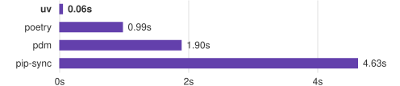

An extremely fast Python package and project manager, written in Rust.

Installing Trio's dependencies with a warm cache.
- A single tool to replace
pip,pip-tools,pipx,poetry,pyenv,twine,virtualenv, and more. - 10-100x faster than
pip. - Provides comprehensive project management, with a universal lockfile.
- Runs scripts, with support for inline dependency metadata.
- Installs and manages Python versions.
- Runs and installs tools published as Python packages.
- Includes a pip-compatible interface for a performance boost with a familiar CLI.
- Supports Cargo-style workspaces for scalable projects.
- Disk-space efficient, with a global cache for dependency deduplication.
- Installable without Rust or Python via
curlorpip. - Supports macOS, Linux, and Windows.
uv is backed by Astral, the creators of Ruff and ty.
Install uv with our standalone installers:
# On macOS and Linux.
curl -LsSf https://astral.sh/uv/install.sh | sh# On Windows.
powershell -ExecutionPolicy ByPass -c "irm https://astral.sh/uv/install.ps1 | iex"Or, from PyPI:
# With pip.
pip install uv# Or pipx.
pipx install uvIf installed via the standalone installer, uv can update itself to the latest version:
uv self updateSee the installation documentation for details and alternative installation methods.
uv's documentation is available at docs.astral.sh/uv.
Additionally, the command line reference documentation can be viewed with uv help.
uv manages project dependencies and environments, with support for lockfiles, workspaces, and more,
similar to rye or poetry:
$ uv init example
Initialized project `example` at `/home/user/example`
$ cd example
$ uv add ruff
Creating virtual environment at: .venv
Resolved 2 packages in 170ms
Built example @ file:///home/user/example
Prepared 2 packages in 627ms
Installed 2 packages in 1ms
+ example==0.1.0 (from file:///home/user/example)
+ ruff==0.5.0
$ uv run ruff check
All checks passed!
$ uv lock
Resolved 2 packages in 0.33ms
$ uv sync
Resolved 2 packages in 0.70ms
Checked 1 package in 0.02msSee the project documentation to get started.
uv also supports building and publishing projects, even if they're not managed with uv. See the publish guide to learn more.
uv manages dependencies and environments for single-file scripts.
Create a new script and add inline metadata declaring its dependencies:
$ echo 'import requests; print(requests.get("https://astral.sh"))' > example.py
$ uv add --script example.py requests
Updated `example.py`Then, run the script in an isolated virtual environment:
$ uv run example.py
Reading inline script metadata from: example.py
Installed 5 packages in 12ms
<Response [200]>See the scripts documentation to get started.
uv executes and installs command-line tools provided by Python packages, similar to pipx.
Run a tool in an ephemeral environment using uvx (an alias for uv tool run):
$ uvx pycowsay 'hello world!'
Resolved 1 package in 167ms
Installed 1 package in 9ms
+ pycowsay==0.0.0.2
"""
------------
< hello world! >
------------
\ ^__^
\ (oo)\_______
(__)\ )\/\
||----w |
|| ||Install a tool with uv tool install:
$ uv tool install ruff
Resolved 1 package in 6ms
Installed 1 package in 2ms
+ ruff==0.5.0
Installed 1 executable: ruff
$ ruff --version
ruff 0.5.0See the tools documentation to get started.
uv installs Python and allows quickly switching between versions.
Install multiple Python versions:
$ uv python install 3.12 3.13 3.14
Installed 3 versions in 972ms
+ cpython-3.12.12-macos-aarch64-none (python3.12)
+ cpython-3.13.9-macos-aarch64-none (python3.13)
+ cpython-3.14.0-macos-aarch64-none (python3.14)
Download Python versions as needed:
$ uv venv --python 3.12.0
Using Python 3.12.0
Creating virtual environment at: .venv
Activate with: source .venv/bin/activate
$ uv run --python pypy@3.8 -- python --version
Python 3.8.16 (a9dbdca6fc3286b0addd2240f11d97d8e8de187a, Dec 29 2022, 11:45:30)
[PyPy 7.3.11 with GCC Apple LLVM 13.1.6 (clang-1316.0.21.2.5)] on darwin
Type "help", "copyright", "credits" or "license" for more information.
>>>>Use a specific Python version in the current directory:
$ uv python pin 3.11
Pinned `.python-version` to `3.11`See the Python installation documentation to get started.
uv provides a drop-in replacement for common pip, pip-tools, and virtualenv commands.
uv extends their interfaces with advanced features, such as dependency version overrides, platform-independent resolutions, reproducible resolutions, alternative resolution strategies, and more.
Migrate to uv without changing your existing workflows — and experience a 10-100x speedup — with the
uv pip interface.
Compile requirements into a platform-independent requirements file:
$ uv pip compile requirements.in \
--universal \
--output-file requirements.txt
Resolved 43 packages in 12msCreate a virtual environment:
$ uv venv
Using Python 3.12.3
Creating virtual environment at: .venv
Activate with: source .venv/bin/activateInstall the locked requirements:
$ uv pip sync requirements.txt
Resolved 43 packages in 11ms
Installed 43 packages in 208ms
+ babel==2.15.0
+ black==24.4.2
+ certifi==2024.7.4
...See the pip interface documentation to get started.
We are passionate about supporting contributors of all levels of experience and would love to see you get involved in the project. See the contributing guide to get started.
It's pronounced as "you - vee" (/juː viː/)
Just "uv", please. See the style guide for details.
See uv's platform support document.
Yes, uv is stable and widely used in production. See uv's versioning policy document for details.
uv's dependency resolver uses PubGrub under the hood. We're grateful to the PubGrub maintainers, especially Jacob Finkelman, for their support.
uv's Git implementation is based on Cargo.
Some of uv's optimizations are inspired by the great work we've seen in pnpm, Orogene, and Bun. We've also learned a lot from Nathaniel J. Smith's Posy and adapted its trampoline for Windows support.
uv is licensed under either of
- Apache License, Version 2.0, (LICENSE-APACHE or https://www.apache.org/licenses/LICENSE-2.0)
- MIT license (LICENSE-MIT or https://opensource.org/licenses/MIT)
at your option.
Unless you explicitly state otherwise, any contribution intentionally submitted for inclusion in uv by you, as defined in the Apache-2.0 license, shall be dually licensed as above, without any additional terms or conditions.